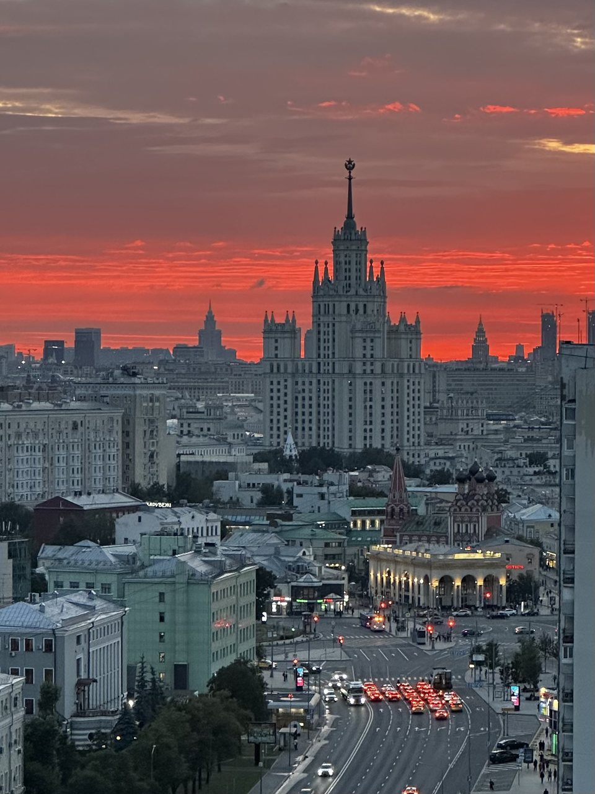

Закатный силуэт
Крыша на Марксистской
Точка ради одного, но сильного кадра: сталинская высотка на Котельнической стоит прямо по центру панорамы, а за ней разворачивается закатное небо.
Эту крышу мы сейчас не предлагаем — посмотрите другие в каталоге.
Что видно с этой крыши
Композиция здесь задана заранее: высотка на Котельнической набережной занимает центр кадра почти целиком, со шпилем и всеми ярусами. Она стоит достаточно близко, чтобы читались детали фасада, и достаточно далеко, чтобы целиком помещаться в кадр.
Вокруг — старая московская застройка: невысокие дома, зелёные крыши, купола церкви справа от высотки. Внизу проходит широкая улица, и вечером она превращается в две светящиеся полосы — красную от габаритов и белую от фар.
Главное здесь — небо. На нашем кадре с этой точки закат ушёл в насыщенный алый, и высотка получилась тёмным силуэтом на горящем фоне. Такое небо бывает не каждый вечер, но сама композиция работает при любом свете.
Когда лучше приходить
Строго вечер. Вся ценность точки — в закатном небе за высоткой и в огнях улицы внизу, поэтому приходить стоит к началу заката. Днём кадр получается обычным городским видом.
Кому подойдёт
Хороший вариант, если нужен один сильный вертикальный кадр, а не длинная панорама: высотка, небо, поток машин. Подойдёт для свидания — точка камерная и не требует долгих перемещений по кровле.
Как попасть
Подняться можно только вместе с сопровождающим: мы встречаемся у дома в назначенное время, поднимаемся и коротко объясняем правила на площадке. Точный адрес и точку встречи присылаем после подтверждения записи — заранее их не публикуем. Что взять с собой: удобную нескользящую обувь и тёплый слой, вечером на высоте прохладнее, чем на улице. Подробнее — в гиде «Как попасть на крышу в Москве».
FAQ
Вопросы про эту крышу
Почему в галерее этой крыши всего одно фото?
Мы показываем только собственные кадры и не берём чужие. С этой точки у нас пока один снимок — он честно передаёт, что отсюда видно. Новые появятся после следующих прогулок.
Гарантирован ли такой же закат, как на фото?
Нет, цвет неба зависит от погоды — мы не можем его обещать. Но композиция с высоткой по центру и улицей внизу остаётся той же в любой вечер.
Какая высотка видна с этой крыши?
Жилой дом на Котельнической набережной — одна из семи сталинских высоток. Он же виден с Таганской и Новокузнецкой, но с других ракурсов.
Над городом